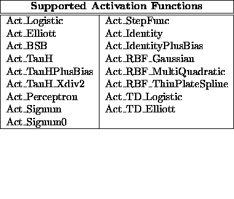

Here is the list of possible error messages and their brief description.
Note:
The C-code generated by snns2c that describes the
network (units and links) defines one unit type which is used for
all units of the network. Therefore this unit type allocates as many
link weights as necessary for the network unit with the most input
connections. Since this type is used for every unit, the necessary
memory space depends on the number of units times size of the
biggest unit.
In most cases this is no problem when you use networks with moderate sized layers. But if you use a network with a very large input layer, your computer memory may be to small. For example, an n-m-k network with n > m > k needs about bytes of memory, so the necessary space is of

where n is the number of units of the biggest layer.We are aware of this problem and will post an improved version of snns2c as soon as possible.